Java动态代理机制详解（JDK 和CGLIB，Javassist，ASM）
class文件简介及加载
Java编译器编译好Java文件之后，产生.class 文件在磁盘中。这种class文件是二进制文件，内容是只有JVM虚拟机能够识别的机器码。JVM虚拟机读取字节码文件，取出二进制数据，加载到内存中，解析.class 文件内的信息，生成对应的 Class对象: 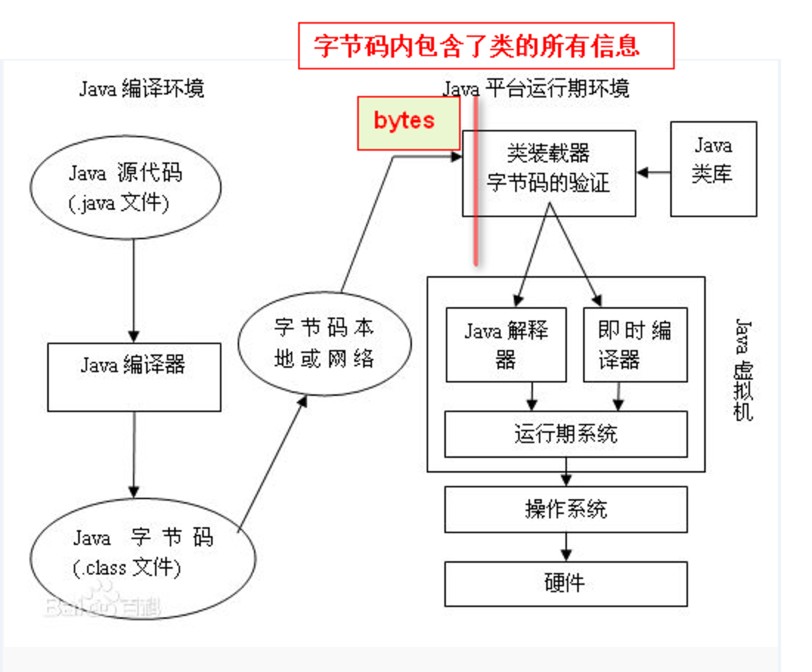
class字节码文件是根据JVM虚拟机规范中规定的字节码组织规则生成的、具体class文件是怎样组织类信息的，可以参考 此博文：深入理解Java Class文件格式系列。或者是Java虚拟机规范。 下面通过一段代码演示手动加载 class文件字节码到系统内，转换成class对象，然后再实例化的过程：
- a. 定义一个 Programmer类：
package samples;
/**
* 程序猿类
* @author louluan
*/
public class Programmer {
public void code()
{
System.out.println("I'm a Programmer,Just Coding.....");
}
}
- b. 自定义一个类加载器：
package samples;
/**
* 自定义一个类加载器，用于将字节码转换为class对象
* @author louluan
*/
public class MyClassLoader extends ClassLoader {
public Class<?> defineMyClass( byte[] b, int off, int len)
{
return super.defineClass(b, off, len);
}
}
- c. 然后编译成Programmer.class文件，在程序中读取字节码，然后转换成相应的class对象，再实例化：
package samples;
import java.io.File;
import java.io.FileInputStream;
import java.io.FileNotFoundException;
import java.io.IOException;
import java.io.InputStream;
import java.net.URL;
public class MyTest {
public static void main(String[] args) throws IOException {
//读取本地的class文件内的字节码，转换成字节码数组
File file = new File(".");
InputStream input = new FileInputStream(file.getCanonicalPath()+"\\bin\\samples\\Programmer.class");
byte[] result = new byte[1024];
int count = input.read(result);
// 使用自定义的类加载器将 byte字节码数组转换为对应的class对象
MyClassLoader loader = new MyClassLoader();
Class clazz = loader.defineMyClass( result, 0, count);
//测试加载是否成功，打印class 对象的名称
System.out.println(clazz.getCanonicalName());
//实例化一个Programmer对象
Object o= clazz.newInstance();
try {
//调用Programmer的code方法
clazz.getMethod("code", null).invoke(o, null);
} catch (IllegalArgumentException | InvocationTargetException
| NoSuchMethodException | SecurityException e) {
e.printStackTrace();
}
}
}
以上代码演示了，通过字节码加载成class 对象的能力，下面看一下在代码中如何生成class文件的字节码。
在运行期的代码中生成二进制字节码
由于JVM通过字节码的二进制信息加载类的，那么，如果我们在运行期系统中，遵循Java编译系统组织.class文件的格式和结构，生成相应的二进制数据，然后再把这个二进制数据加载转换成对应的类，这样，就完成了在代码中，动态创建一个类的能力了。 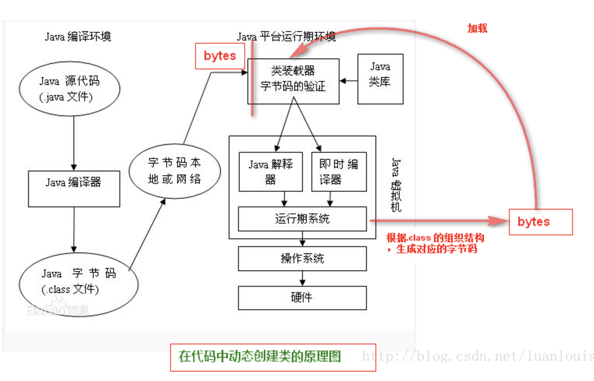
在运行时期可以按照Java虚拟机规范对class文件的组织规则生成对应的二进制字节码。当前有很多开源框架可以完成这些功能，如ASM，Javassist。
Java字节码生成开源框架介绍--ASM：
ASM 是一个 Java 字节码操控框架。它能够以二进制形式修改已有类或者动态生成类。ASM 可以直接产生二进制 class 文件，也可以在类被加载入 Java 虚拟机之前动态改变类行为。ASM 从类文件中读入信息后，能够改变类行为，分析类信息，甚至能够根据用户要求生成新类。
不过ASM在创建class字节码的过程中，操纵的级别是底层JVM的汇编指令级别，这要求ASM使用者要对class组织结构和JVM汇编指令有一定的了解。
下面通过ASM 生成下面类Programmer的class字节码：
package com.samples;
import java.io.PrintStream;
public class Programmer {
public void code()
{
System.out.println("I'm a Programmer,Just Coding.....");
}
}
使用ASM框架提供了ClassWriter 接口，通过访问者模式进行动态创建class字节码，看下面的例子：
package samples;
import java.io.File;
import java.io.FileOutputStream;
import java.io.IOException;
import org.objectweb.asm.ClassWriter;
import org.objectweb.asm.MethodVisitor;
import org.objectweb.asm.Opcodes;
public class MyGenerator {
public static void main(String[] args) throws IOException {
System.out.println();
ClassWriter classWriter = new ClassWriter(0);
// 通过visit方法确定类的头部信息
classWriter.visit(Opcodes.V1_7,// java版本
Opcodes.ACC_PUBLIC,// 类修饰符
"Programmer", // 类的全限定名
null, "java/lang/Object", null);
//创建构造函数
MethodVisitor mv = classWriter.visitMethod(Opcodes.ACC_PUBLIC, "<init>", "()V", null, null);
mv.visitCode();
mv.visitVarInsn(Opcodes.ALOAD, 0);
mv.visitMethodInsn(Opcodes.INVOKESPECIAL, "java/lang/Object", "<init>","()V");
mv.visitInsn(Opcodes.RETURN);
mv.visitMaxs(1, 1);
mv.visitEnd();
// 定义code方法
MethodVisitor methodVisitor = classWriter.visitMethod(Opcodes.ACC_PUBLIC, "code", "()V",
null, null);
methodVisitor.visitCode();
methodVisitor.visitFieldInsn(Opcodes.GETSTATIC, "java/lang/System", "out",
"Ljava/io/PrintStream;");
methodVisitor.visitLdcInsn("I'm a Programmer,Just Coding.....");
methodVisitor.visitMethodInsn(Opcodes.INVOKEVIRTUAL, "java/io/PrintStream", "println",
"(Ljava/lang/String;)V");
methodVisitor.visitInsn(Opcodes.RETURN);
methodVisitor.visitMaxs(2, 2);
methodVisitor.visitEnd();
classWriter.visitEnd();
// 使classWriter类已经完成
// 将classWriter转换成字节数组写到文件里面去
byte[] data = classWriter.toByteArray();
File file = new File("D://Programmer.class");
FileOutputStream fout = new FileOutputStream(file);
fout.write(data);
fout.close();
}
}
上述的代码执行过后，用Java反编译工具（如JD_GUI）打开D盘下生成的Programmer.class，可以看到以下信息： 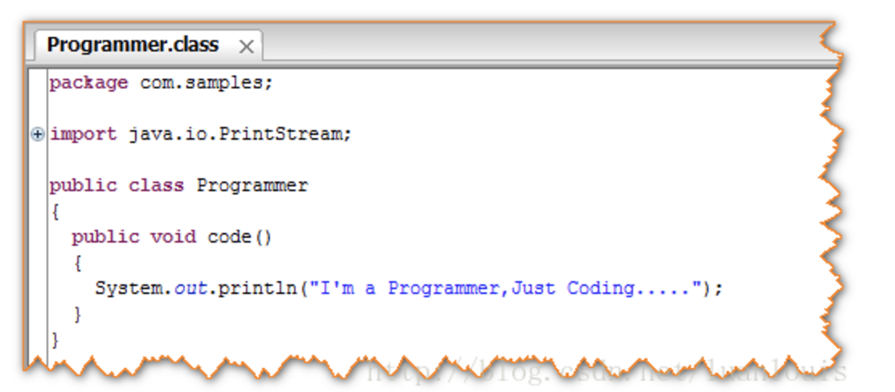
再用上面我们定义的类加载器将这个class文件加载到内存中，然后 创建class对象，并且实例化一个对象，调用code方法，会看到下面的结果： 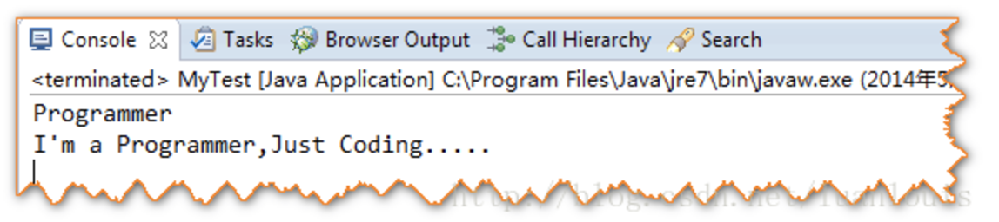
以上表明：在代码里生成字节码，并动态地加载成class对象、创建实例是完全可以实现的。
Java字节码生成开源框架介绍--Javassist：
Javassist是一个开源的分析、编辑和创建Java字节码的类库。是由东京工业大学的数学和计算机科学系的 Shigeru Chiba （千叶 滋）所创建的。它已加入了开放源代码JBoss 应用服务器项目,通过使用Javassist对字节码操作为JBoss实现动态AOP框架。javassist是jboss的一个子项目，其主要的优点，在于简单，而且快速。直接使用java编码的形式，而不需要了解虚拟机指令，就能动态改变类的结构，或者动态生成类。
下面通过Javassist创建上述的Programmer类：
import javassist.ClassPool;
import javassist.CtClass;
import javassist.CtMethod;
import javassist.CtNewMethod;
public class MyGenerator {
public static void main(String[] args) throws Exception {
ClassPool pool = ClassPool.getDefault();
//创建Programmer类
CtClass cc= pool.makeClass("com.samples.Programmer");
//定义code方法
CtMethod method = CtNewMethod.make("public void code(){}", cc);
//插入方法代码
method.insertBefore("System.out.println(\"I'm a Programmer,Just Coding.....\");");
cc.addMethod(method);
//保存生成的字节码
cc.writeFile("d://temp");
}
}
通过JD-gui反编译工具打开Programmer.class 可以看到以下代码： 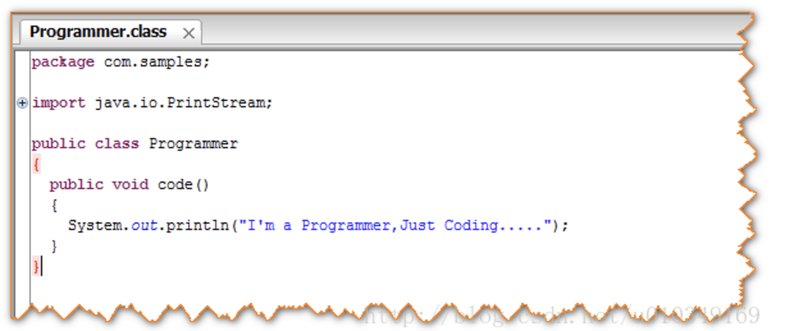
代理的基本构成：
代理模式上，基本上有Subject角色，RealSubject角色，Proxy角色。其中：Subject角色负责定义RealSubject和Proxy角色应该实现的接口；RealSubject角色用来真正完成业务服务功能；Proxy角色负责将自身的Request请求，调用realsubject 对应的request功能来实现业务功能，自己不真正做业务。 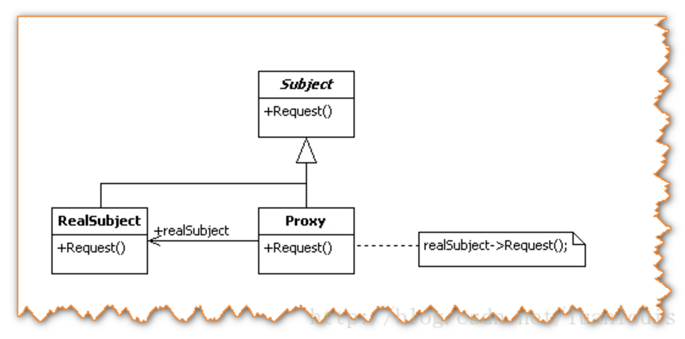
上面的这幅代理结构图是典型的静态的代理模式：
当在代码阶段规定这种代理关系，Proxy类通过编译器编译成class文件，当系统运行时，此class已经存在了。这种静态的代理模式固然在访问无法访问的资源，增强现有的接口业务功能方面有很大的优点，但是大量使用这种静态代理，会使我们系统内的类的规模增大，并且不易维护；并且由于Proxy和RealSubject的功能 本质上是相同的，Proxy只是起到了中介的作用，这种代理在系统中的存在，导致系统结构比较臃肿和松散。
为了解决这个问题，就有了动态地创建Proxy的想法：在运行状态中，需要代理的地方，根据Subject 和RealSubject，动态地创建一个Proxy，用完之后，就会销毁，这样就可以避免了Proxy 角色的class在系统中冗杂的问题了。
下面以一个代理模式实例阐述这一问题：
将车站的售票服务抽象出一个接口TicketService,包含问询，卖票，退票功能，车站类Station实现了TicketService接口，车票代售点StationProxy则实现了代理角色的功能，类图如下所示。 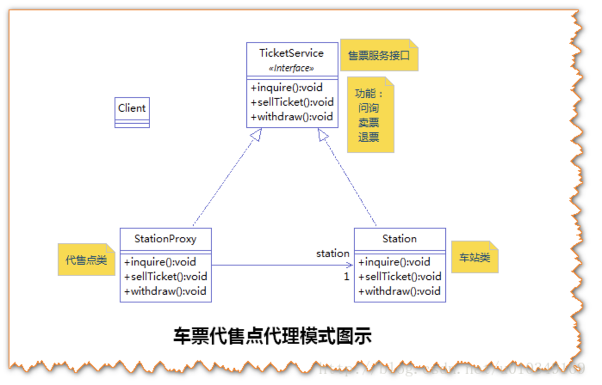
对应的静态的代理模式代码如下所示：
package com.foo.proxy;
/**
* 售票服务接口实现类，车站
* @author louluan
*/
public class Station implements TicketService {
@Override
public void sellTicket() {
System.out.println("\n\t售票.....\n");
}
@Override
public void inquire() {
System.out.println("\n\t问询。。。。\n");
}
@Override
public void withdraw() {
System.out.println("\n\t退票......\n");
}
}
package com.foo.proxy;
/**
* 售票服务接口
* @author louluan
*/
public interface TicketService {
//售票
public void sellTicket();
//问询
public void inquire();
//退票
public void withdraw();
}
package com.foo.proxy;
/**
* 车票代售点
* @author louluan
*
*/
public class StationProxy implements TicketService {
private Station station;
public StationProxy(Station station){
this.station = station;
}
@Override
public void sellTicket() {
// 1.做真正业务前，提示信息
this.showAlertInfo("××××您正在使用车票代售点进行购票，每张票将会收取5元手续费！××××");
// 2.调用真实业务逻辑
station.sellTicket();
// 3.后处理
this.takeHandlingFee();
this.showAlertInfo("××××欢迎您的光临，再见！××××\n");
}
@Override
public void inquire() {
// 1做真正业务前，提示信息
this.showAlertInfo("××××欢迎光临本代售点，问询服务不会收取任何费用，本问询信息仅供参考，具体信息以车站真实数据为准！××××");
// 2.调用真实逻辑
station.inquire();
// 3。后处理
this.showAlertInfo("××××欢迎您的光临，再见！××××\n");
}
@Override
public void withdraw() {
// 1。真正业务前处理
this.showAlertInfo("××××欢迎光临本代售点，退票除了扣除票额的20%外，本代理处额外加收2元手续费！××××");
// 2.调用真正业务逻辑
station.withdraw();
// 3.后处理
this.takeHandlingFee();
}
/*
* 展示额外信息
*/
private void showAlertInfo(String info) {
System.out.println(info);
}
/*
* 收取手续费
*/
private void takeHandlingFee() {
System.out.println("收取手续费，打印发票。。。。。\n");
}
}
由于我们现在不希望静态地有StationProxy类存在，希望在代码中，动态生成器二进制代码，加载进来。为此，使用Javassist开源框架，在代码中动态地生成StationProxy的字节码：
package com.foo.proxy;
import java.lang.reflect.Constructor;
import javassist.*;
public class Test {
public static void main(String[] args) throws Exception {
createProxy();
}
/*
* 手动创建字节码
*/
private static void createProxy() throws Exception
{
ClassPool pool = ClassPool.getDefault();
CtClass cc = pool.makeClass("com.foo.proxy.StationProxy");
//设置接口
CtClass interface1 = pool.get("com.foo.proxy.TicketService");
cc.setInterfaces(new CtClass[]{interface1});
//设置Field
CtField field = CtField.make("private com.foo.proxy.Station station;", cc);
cc.addField(field);
CtClass stationClass = pool.get("com.foo.proxy.Station");
CtClass[] arrays = new CtClass[]{stationClass};
CtConstructor ctc = CtNewConstructor.make(arrays,null,CtNewConstructor.PASS_NONE,null,null, cc);
//设置构造函数内部信息
ctc.setBody("{this.station=$1;}");
cc.addConstructor(ctc);
//创建收取手续 takeHandlingFee方法
CtMethod takeHandlingFee = CtMethod.make("private void takeHandlingFee() {}", cc);
takeHandlingFee.setBody("System.out.println(\"收取手续费，打印发票。。。。。\");");
cc.addMethod(takeHandlingFee);
//创建showAlertInfo 方法
CtMethod showInfo = CtMethod.make("private void showAlertInfo(String info) {}", cc);
showInfo.setBody("System.out.println($1);");
cc.addMethod(showInfo);
//sellTicket
CtMethod sellTicket = CtMethod.make("public void sellTicket(){}", cc);
sellTicket.setBody("{this.showAlertInfo(\"××××您正在使用车票代售点进行购票，每张票将会收取5元手续费！××××\");"
+ "station.sellTicket();"
+ "this.takeHandlingFee();"
+ "this.showAlertInfo(\"××××欢迎您的光临，再见！××××\");}");
cc.addMethod(sellTicket);
//添加inquire方法
CtMethod inquire = CtMethod.make("public void inquire() {}", cc);
inquire.setBody("{this.showAlertInfo(\"××××欢迎光临本代售点，问询服务不会收取任何费用，本问询信息仅供参考，具体信息以车站真实数据为准！××××\");"
+ "station.inquire();"
+ "this.showAlertInfo(\"××××欢迎您的光临，再见！××××\");}"
);
cc.addMethod(inquire);
//添加widthraw方法
CtMethod withdraw = CtMethod.make("public void withdraw() {}", cc);
withdraw.setBody("{this.showAlertInfo(\"××××欢迎光临本代售点，退票除了扣除票额的20%外，本代理处额外加收2元手续费！××××\");"
+ "station.withdraw();"
+ "this.takeHandlingFee();}"
);
cc.addMethod(withdraw);
//获取动态生成的class
Class c = cc.toClass();
//获取构造器
Constructor constructor= c.getConstructor(Station.class);
//通过构造器实例化
TicketService o = (TicketService)constructor.newInstance(new Station());
o.inquire();
cc.writeFile("D://test");
}
}
上述代码执行过后，会产生StationProxy的字节码，并且用生成字节码加载如内存创建对象，调用inquire()方法，会得到以下结果： 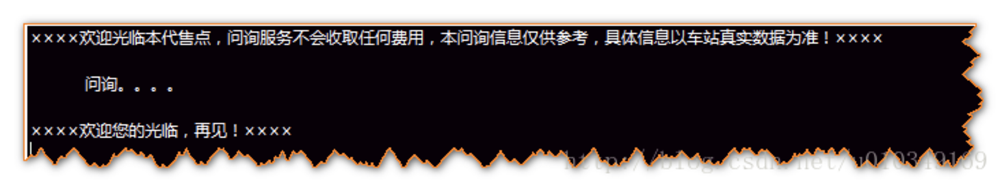
通过上面动态生成的代码，我们发现，其实现相当地麻烦在创造的过程中，含有太多的业务代码。我们使用上述创建Proxy代理类的方式的初衷是减少系统代码的冗杂度，但是上述做法却增加了在动态创建代理类过程中的复杂度：手动地创建了太多的业务代码，并且封装性也不够，完全不具有可拓展性和通用性。如果某个代理类的一些业务逻辑非常复杂，上述的动态创建代理的方式是非常不可取的！
InvocationHandler角色的由来
仔细思考代理模式中的代理Proxy角色。Proxy角色在执行代理业务的时候，无非是在调用真正业务之前或者之后做一些“额外”业务。 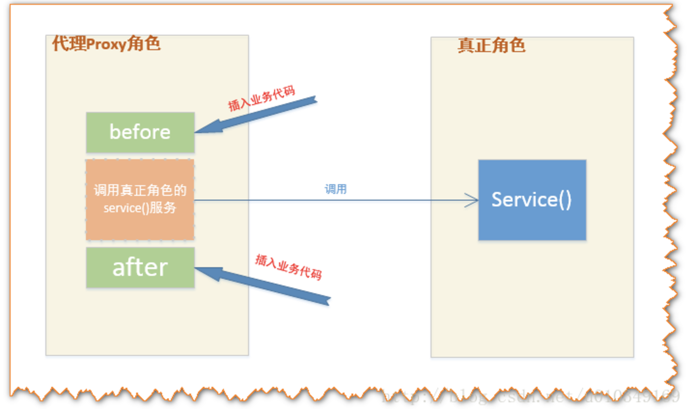
有上图可以看出，代理类处理的逻辑很简单：在调用某个方法前及方法后做一些额外的业务。换一种思路就是：在触发（invoke）真实角色的方法之前或者之后做一些额外的业务。那么，为了构造出具有通用性和简单性的代理类，可以将所有的触发真实角色动作交给一个触发的管理器，让这个管理器统一地管理触发。这种管理器就是Invocation Handler。
动态代理模式的结构跟上面的静态代理模式稍微有所不同，多引入了一个InvocationHandler角色。
先解释一下InvocationHandler的作用：
在静态代理中，代理Proxy中的方法，都指定了调用了特定的realSubject中的对应的方法：
在上面的静态代理模式下，Proxy所做的事情，无非是调用在不同的request时，调用触发realSubject对应的方法；更抽象点看，Proxy所作的事情；在Java中 方法（Method）也是作为一个对象来看待了，动态代理工作的基本模式就是将自己的方法功能的实现交给 InvocationHandler角色，外界对Proxy角色中的每一个方法的调用，Proxy角色都会交给InvocationHandler来处理，而InvocationHandler则调用具体对象角色的方法。如下图所示：
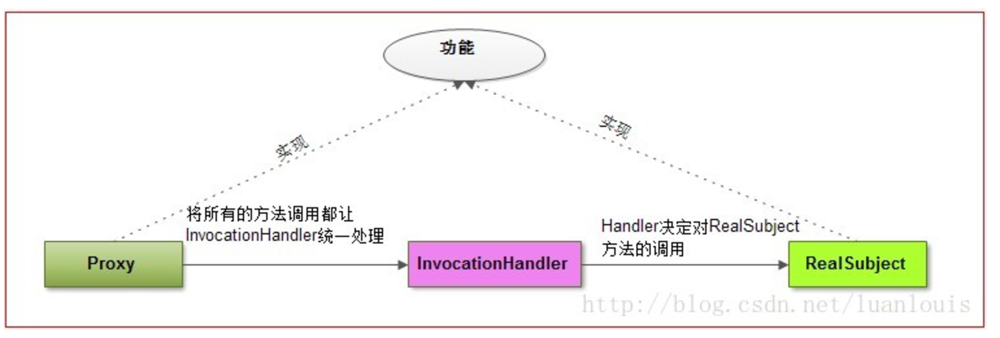
在这种模式之中：代理Proxy 和RealSubject 应该实现相同的功能，这一点相当重要。（我这里说的功能，可以理解为某个类的public方法） 在面向对象的编程之中，如果我们想要约定Proxy 和RealSubject可以实现相同的功能，有两种方式：
- a.一个比较直观的方式，就是定义一个功能接口，然后让Proxy 和RealSubject来实现这个接口。
- b.还有比较隐晦的方式，就是通过继承。因为如果Proxy 继承自RealSubject，这样Proxy则拥有了RealSubject的功能，Proxy还可以通过重写RealSubject中的方法，来实现多态。
其中JDK中提供的创建动态代理的机制，是以a 这种思路设计的，而cglib 则是以b思路设计的。
JDK的动态代理创建机制----通过接口
比如现在想为RealSubject这个类创建一个动态代理对象，JDK主要会做以下工作：
-
- 获取 RealSubject上的所有接口列表；
-
- 确定要生成的代理类的类名，默认为：com.sun.proxy.$ProxyXXXX ；
-
- 根据需要实现的接口信息，在代码中动态创建 该Proxy类的字节码；
- 4 . 将对应的字节码转换为对应的class 对象；
-
- 创建InvocationHandler 实例handler，用来处理Proxy所有方法调用；
-
- Proxy 的class对象 以创建的handler对象为参数，实例化一个proxy对象
JDK通过 java.lang.reflect.Proxy包来支持动态代理，一般情况下，我们使用下面的newProxyInstance方法 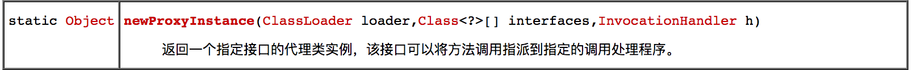
而对于InvocationHandler，我们需要实现下列的invoke方法：
在调用代理对象中的每一个方法时，在代码内部，都是直接调用了InvocationHandler 的invoke方法，而invoke方法根据代理类传递给自己的method参数来区分是什么方法。
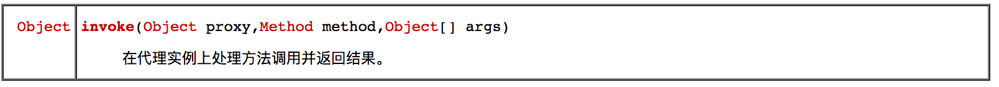
讲的有点抽象，下面通过一个实例来演示一下吧：
JDK动态代理示例
现在定义两个接口Vehicle和Rechargable，Vehicle表示交通工具类，有drive()方法；Rechargable接口表示可充电的（工具），有recharge() 方法；
定义一个实现两个接口的类ElectricCar，类图如下： 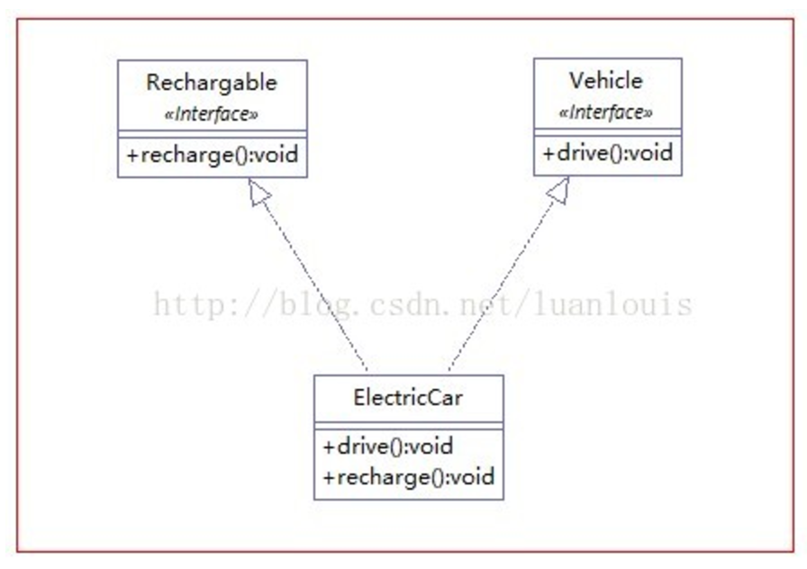
通过下面的代码片段，来为ElectricCar创建动态代理类： ``` package com.foo.proxy;
import java.lang.reflect.InvocationHandler;
import java.lang.reflect.Proxy;
public class Test {
public static void main(String[] args) {
ElectricCar car = new ElectricCar();
// 1.获取对应的ClassLoader
ClassLoader classLoader = car.getClass().getClassLoader();
// 2.获取ElectricCar 所实现的所有接口
Class[] interfaces = car.getClass().getInterfaces();
// 3.设置一个来自代理传过来的方法调用请求处理器，处理所有的代理对象上的方法调用
InvocationHandler handler = new InvocationHandlerImpl(car);
/*
4.根据上面提供的信息，创建代理对象 在这个过程中，
a.JDK会通过根据传入的参数信息动态地在内存中创建和.class 文件等同的字节码
b.然后根据相应的字节码转换成对应的class，
c.然后调用newInstance()创建实例
*/
Object o = Proxy.newProxyInstance(classLoader, interfaces, handler);
Vehicle vehicle = (Vehicle) o;
vehicle.drive();
Rechargable rechargeable = (Rechargable) o;
rechargeable.recharge();
}
}
```
package com.foo.proxy;
/**
* 交通工具接口
* @author louluan
*/
public interface Vehicle {
public void drive();
}
package com.foo.proxy;
/**
* 可充电设备接口
* @author louluan
*/
public interface Rechargable {
public void recharge();
}
package com.foo.proxy;
/**
* 电能车类，实现Rechargable，Vehicle接口
* @author louluan
*/
public class ElectricCar implements Rechargable, Vehicle {
@Override
public void drive() {
System.out.println("Electric Car is Moving silently...");
}
@Override
public void recharge() {
System.out.println("Electric Car is Recharging...");
}
}
package com.foo.proxy;
import java.lang.reflect.InvocationHandler;
import java.lang.reflect.Method;
public class InvocationHandlerImpl implements InvocationHandler {
private ElectricCar car;
public InvocationHandlerImpl(ElectricCar car)
{
this.car=car;
}
@Override
public Object invoke(Object paramObject, Method paramMethod,
Object[] paramArrayOfObject) throws Throwable {
System.out.println("You are going to invoke "+paramMethod.getName()+" ...");
paramMethod.invoke(car, null);
System.out.println(paramMethod.getName()+" invocation Has Been finished...");
return null;
}
}
来看一下代码执行后的结果： 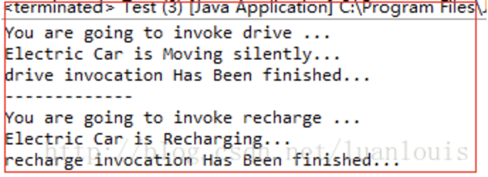
生成动态代理类的字节码并且保存到硬盘中：
JDK提供了sun.misc.ProxyGenerator.generateProxyClass(String proxyName,class[] interfaces) 底层方法来产生动态代理类的字节码：
下面定义了一个工具类，用来将生成的动态代理类保存到硬盘中：
package com.foo.proxy;
import java.io.FileOutputStream;
import java.io.IOException;
import java.lang.reflect.Proxy;
import sun.misc.ProxyGenerator;
public class ProxyUtils {
/*
* 将根据类信息 动态生成的二进制字节码保存到硬盘中，
* 默认的是clazz目录下
* params :clazz 需要生成动态代理类的类
* proxyName : 为动态生成的代理类的名称
*/
public static void generateClassFile(Class clazz,String proxyName)
{
//根据类信息和提供的代理类名称，生成字节码
byte[] classFile = ProxyGenerator.generateProxyClass(proxyName, clazz.getInterfaces());
String paths = clazz.getResource(".").getPath();
System.out.println(paths);
FileOutputStream out = null;
try {
//保留到硬盘中
out = new FileOutputStream(paths+proxyName+".class");
out.write(classFile);
out.flush();
} catch (Exception e) {
e.printStackTrace();
} finally {
try {
out.close();
} catch (IOException e) {
e.printStackTrace();
}
}
}
}
现在我们想将生成的代理类起名为“ElectricCarProxy”，并保存在硬盘，应该使用以下语句：
ProxyUtils.generateClassFile(car.getClass(), "ElectricCarProxy");
这样将在ElectricCar.class 同级目录下产生 ElectricCarProxy.class文件。用反编译工具如jd-gui.exe 打开，将会看到以下信息：
import com.foo.proxy.Rechargable;
import com.foo.proxy.Vehicle;
import java.lang.reflect.InvocationHandler;
import java.lang.reflect.Method;
import java.lang.reflect.Proxy;
import java.lang.reflect.UndeclaredThrowableException;
/**
生成的动态代理类的组织模式是继承Proxy类，然后实现需要实现代理的类上的所有接口，而在实现的过程中，则是通过将所有的方法都交给了InvocationHandler来处理
*/
public final class ElectricCarProxy extends Proxy
implements Rechargable, Vehicle
{
private static Method m1;
private static Method m3;
private static Method m4;
private static Method m0;
private static Method m2;
public ElectricCarProxy(InvocationHandler paramInvocationHandler)
throws
{
super(paramInvocationHandler);
}
public final boolean equals(Object paramObject)
throws
{
try
{ // 方法功能实现交给InvocationHandler处理
return ((Boolean)this.h.invoke(this, m1, new Object[] { paramObject })).booleanValue();
}
catch (Error|RuntimeException localError)
{
throw localError;
}
catch (Throwable localThrowable)
{
throw new UndeclaredThrowableException(localThrowable);
}
}
public final void recharge()
throws
{
try
{
// 方法功能实现交给InvocationHandler处理
this.h.invoke(this, m3, null);
return;
}
catch (Error|RuntimeException localError)
{
throw localError;
}
catch (Throwable localThrowable)
{
throw new UndeclaredThrowableException(localThrowable);
}
}
public final void drive()
throws
{
try
{
// 方法功能实现交给InvocationHandler处理
this.h.invoke(this, m4, null);
return;
}
catch (Error|RuntimeException localError)
{
throw localError;
}
catch (Throwable localThrowable)
{
throw new UndeclaredThrowableException(localThrowable);
}
}
public final int hashCode()
throws
{
try
{
// 方法功能实现交给InvocationHandler处理
return ((Integer)this.h.invoke(this, m0, null)).intValue();
}
catch (Error|RuntimeException localError)
{
throw localError;
}
catch (Throwable localThrowable)
{
throw new UndeclaredThrowableException(localThrowable);
}
}
public final String toString()
throws
{
try
{
// 方法功能实现交给InvocationHandler处理
return (String)this.h.invoke(this, m2, null);
}
catch (Error|RuntimeException localError)
{
throw localError;
}
catch (Throwable localThrowable)
{
throw new UndeclaredThrowableException(localThrowable);
}
}
static
{
try
{ //为每一个需要方法对象，当调用相应的方法时，分别将方法对象作为参数传递给InvocationHandler处理
m1 = Class.forName("java.lang.Object").getMethod("equals", new Class[] { Class.forName("java.lang.Object") });
m3 = Class.forName("com.foo.proxy.Rechargable").getMethod("recharge", new Class[0]);
m4 = Class.forName("com.foo.proxy.Vehicle").getMethod("drive", new Class[0]);
m0 = Class.forName("java.lang.Object").getMethod("hashCode", new Class[0]);
m2 = Class.forName("java.lang.Object").getMethod("toString", new Class[0]);
return;
}
catch (NoSuchMethodException localNoSuchMethodException)
{
throw new NoSuchMethodError(localNoSuchMethodException.getMessage());
}
catch (ClassNotFoundException localClassNotFoundException)
{
throw new NoClassDefFoundError(localClassNotFoundException.getMessage());
}
}
}
仔细观察可以看出生成的动态代理类有以下特点: 1.继承自 java.lang.reflect.Proxy，实现了 Rechargable,Vehicle 这两个ElectricCar实现的接口； 2.类中的所有方法都是final 的； * 3.所有的方法功能的实现都统一调用了InvocationHandler的invoke()方法。
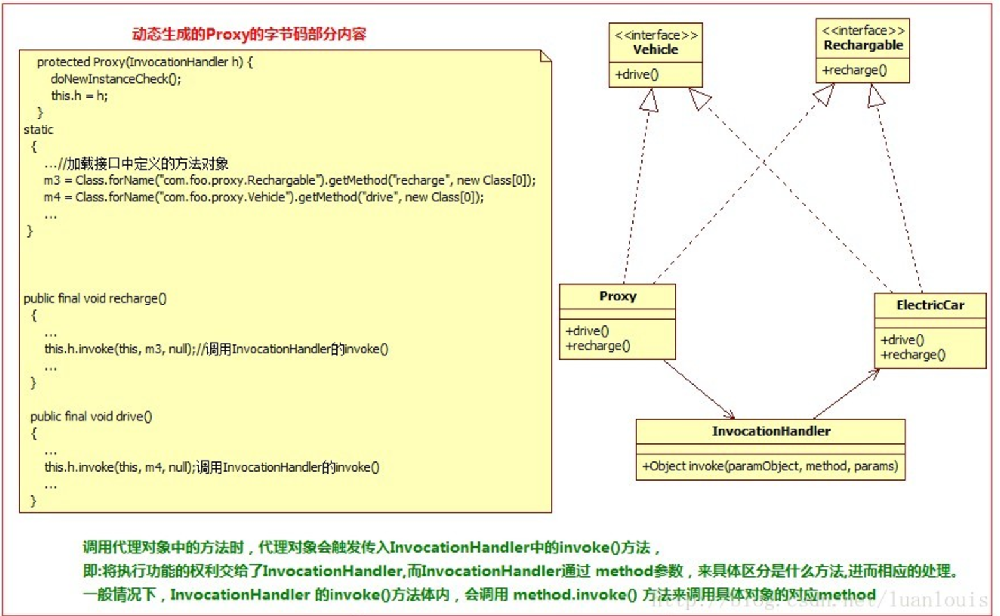
cglib 生成动态代理类的机制----通过类继承：
JDK中提供的生成动态代理类的机制有个鲜明的特点是： 某个类必须有实现的接口，而生成的代理类也只能代理某个类接口定义的方法，比如：如果上面例子的ElectricCar实现了继承自两个接口的方法外，另外实现了方法bee() ,则在产生的动态代理类中不会有这个方法了！更极端的情况是：如果某个类没有实现接口，那么这个类就不能同JDK产生动态代理了！
幸好我们有cglib。“CGLIB（Code Generation Library），是一个强大的，高性能，高质量的Code生成类库，它可以在运行期扩展Java类与实现Java接口。” cglib 创建某个类A的动态代理类的模式是：
-
- 查找A上的所有非final 的public类型的方法定义；
-
- 将这些方法的定义转换成字节码；
-
- 将组成的字节码转换成相应的代理的class对象；
-
- 实现 MethodInterceptor接口，用来处理 对代理类上所有方法的请求（这个接口和JDK动态代理InvocationHandler的功能和角色是一样的）
一个有趣的例子：定义一个Programmer类，一个Hacker类
package samples;
/**
* 程序猿类
* @author louluan
*/
public class Programmer {
public void code()
{
System.out.println("I'm a Programmer,Just Coding.....");
}
}
package samples;
import java.lang.reflect.Method;
import net.sf.cglib.proxy.MethodInterceptor;
import net.sf.cglib.proxy.MethodProxy;
/*
* 实现了方法拦截器接口
*/
public class Hacker implements MethodInterceptor {
@Override
public Object intercept(Object obj, Method method, Object[] args,
MethodProxy proxy) throws Throwable {
System.out.println("**** I am a hacker,Let's see what the poor programmer is doing Now...");
proxy.invokeSuper(obj, args);
System.out.println("**** Oh,what a poor programmer.....");
return null;
}
}
package samples;
import net.sf.cglib.proxy.Enhancer;
public class Test {
public static void main(String[] args) {
Programmer progammer = new Programmer();
Hacker hacker = new Hacker();
//cglib 中加强器，用来创建动态代理
Enhancer enhancer = new Enhancer();
//设置要创建动态代理的类
enhancer.setSuperclass(progammer.getClass());
// 设置回调，这里相当于是对于代理类上所有方法的调用，都会调用CallBack，而Callback则需要实行intercept()方法进行拦截
enhancer.setCallback(hacker);
Programmer proxy =(Programmer)enhancer.create();
proxy.code();
}
}
程序执行结果：
让我们看看通过cglib生成的class文件内容：
package samples;
import java.lang.reflect.Method;
import net.sf.cglib.core.ReflectUtils;
import net.sf.cglib.core.Signature;
import net.sf.cglib.proxy.Callback;
import net.sf.cglib.proxy.Factory;
import net.sf.cglib.proxy.MethodInterceptor;
import net.sf.cglib.proxy.MethodProxy;
public class ProgrammerEnhancerByCGLIBfa7aa2cd extends Programmer
implements Factory
{
//......省略
private MethodInterceptor CGLIB$CALLBACK_0; // Enchaner传入的methodInterceptor
// ....省略
public final void code()
{
MethodInterceptor tmp4_1 = this.CGLIB$CALLBACK_0;
if (tmp4_1 == null)
{
tmp4_1;
CGLIB$BIND_CALLBACKS(this);//若callback 不为空，则调用methodInterceptor 的intercept()方法
}
if (this.CGLIB$CALLBACK_0 != null)
return;
//如果没有设置callback回调函数，则默认执行父类的方法
super.code();
}
//....后续省略
}